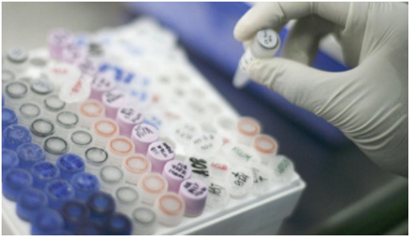

Les succès des bases de données ADN en Europe
BIRMINGHAM - Les bases de données ADN regroupent les profils ADN de suspects, de criminels et le matériel ADN découvert sur des scènes de crimes non résolus. En raison de l'utilisation des bases de données ADN, le nombre de crimes résolus en Europe a augmenté. |
Cela est surtout le cas en Angleterre et au Pays de Galles où tout individu, arrêté ou soupçonné d’une infraction aux lois, doit fournir un échantillon d'ADN dont le profil est ensuite stocké dans la base de données ADN. Dans d’autres pays européens l’information génétique est relativement moins disponible en raison de |
lois plus strictes. En Ecosse et aux Pays-Bas, la loi exige de supprimer de la base de données les profils ADN des personnes qui ont été acquittées. En Suède, seulement les profils ADN de criminels qui ont passé plus de deux ans en prison sont conservés. En Norvège et en Allemagne, les casiers judiciaires restent disponibles seulement pour les auteurs d’infractions graves, pour les personnes reconnues coupables de certaines infractions et susceptibles de récidiver. Au Royaume-Uni, déjà plus de 8 000 profils d'individus ont été reliés à des scènes de crime impliquant plus de 14 000 délits, tout cela depuis 1995, date à laquelle la base de données a été établie. Il y a plus de 3 000 recherches de comparaison d'ADN par mois. Bien que d’autres pays européens aient des lois plus strictes limitant l'enregistrement des profils ADN de |
criminels dans les bases de données, le succès est toujours impressionnant. Par exemple, en 2008 aux Pays-Bas, plus de 1 500 recherches de comparaisons ADN ont été effectuées chaque mois. Grâce à la coopération entre les différents pays les crimes internationaux sont aussi résolus plus facilement. Ce ne sont pas uniquement les crimes récents qui sont résolus grâce à l’ADN. La recherche d'ADN pour d’anciens cas classés peut aussi apporter de nouvelles preuves. Par exemple une jeune mère a été assassinée mais personne n’avait été inculpé. Des années plus tard le meurtrier mis le feu à une petite boutique. Les échantillons d'ADN prélevés sur la scène de crime ont été reliés au cas de l’assassinat de la jeune mère. L’homme a alors été reconnu comme coupable. |
|  | |||